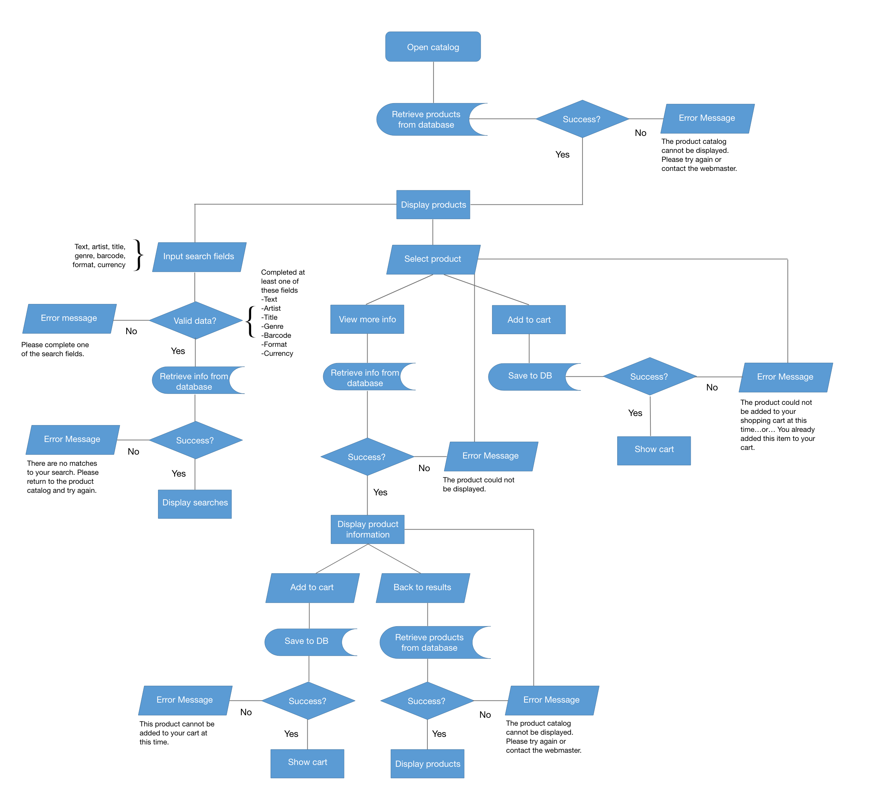
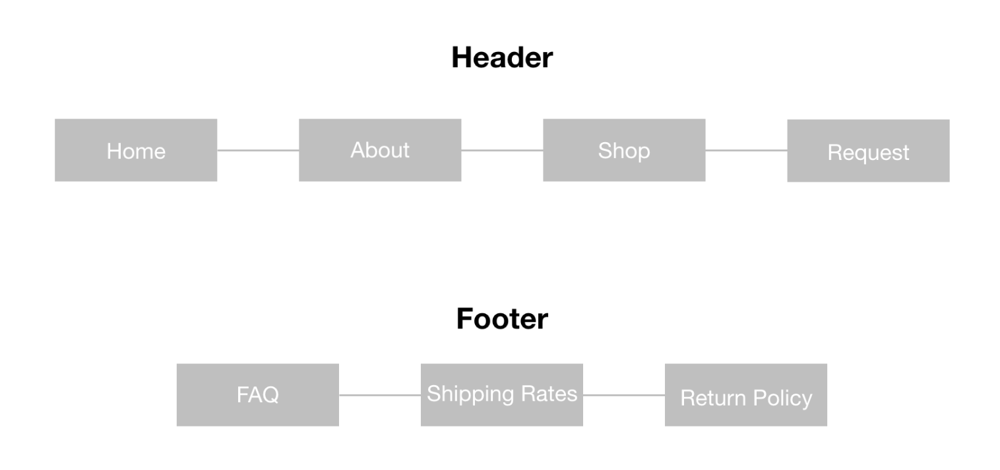

Forever Young Records
Website Redesign Concept
*THIS IS AN ONGOING PROJECT*
Overview
Forever Young Records is a family owned and operated independent record store in Grand Prairie. It began in 1984 when record collector David Eckstrom opened the first retail location in Irving. The business has moved several times, finally settling in a 11,500ft2 retail space which houses over 250,000 items. The client’s goal is to offer a large selection of high quality music at reasonable costs.
My Role
Market Research, Audience Analysis (User Profiles), Search Functionability, Product Catalog Management, mySQL Database, Functional Requirements & Specification, Flow Charts, Website Design & Development, Responsive Mobile & Tablet
Objectives
- Increase online commerce sales
- Reach a broader consumer base
- Create an intuitive and pleasant online shopping experience
Target Audience
16-73 (Gen Z - Baby Boomers)
Implications to Website Design
The web design needs to accommodate people over 45 years of age. For example, a readable text font, good contrast, and alt image tag descriptions for screen readers.
User Profiles
- The Millenial - This customer is tech-savy, confident, and enjoys entertainment. They are part of the recent surge of young people buying records. According to Fortune Magazine, 50% of people who are buying vinyls are 18-34 years old. The goal of this customer is to find both recently released and classic records at affordable prices. They are more likely to convert to online sales.
- The Old Soul - This customer is independent, knowledgeable, introspective, and nostalgic. They enjoy vintage and tangible items. They are more likely to visit the store than shop online. On the website, their goal is to view the products in stock.
- The Collector - This customer is patient, resourceful, and diligent. Their goal is to find particular items, often rare or limited edition products in good to mint condition. They need a website with highly detailed search functions.
Opportunities
Recently the client has widened their customer base to cater to an online community. The client is well positioned to increase sales through online purchasing.
Website Features
- Search function - The customer can search for a title, artist, or barcode. Products are pulled from the database based on the search.
- Product Catalog - The client can add, edit and delete items from the product catalog. Client does NOT need to know how to manage the mySQL database directly.
Functional Requirements
| # | Need | Title | Description |
|---|---|---|---|
| 1.1 | Help customers find the products they want to buy | Searchability | The website shall allow customers to search the catalogue (query the database with multiple requests). |
| 2.1 | Increase customer awareness of new products | Browse Inventory | The website shall allow customers to easily browse new products. |
| 3.1 | Encourage online sales | Promote Specials | The website shall promote online deals. |
| 4.1 | Add, edit, and delete products | Catalogue Management | The website shall allow the client to upload new products, edit existing ones, and delete items. |
| 5.1 | Filter items to suggest similar products | Product Recommendation | The website shall allow customers to see similar items to the ones they are browsing. |
| 6.1 | Increase sales online | Shopping Cart | The website shall allow customers to add products to a shopping cart. |
| Field | Example |
|---|---|
| Use Case Name | User Search of Product Catalogue |
| Use Case Specifier | Elizabeth Slonaker, Web Designer and Developer |
| Version History | Version 001 10/4/19 |
| Summary | This Use Case describes the process by which a user searches for a desired product from the catalogue, either through a typed input field or selecting options from a category. |
| Trigger | The user desires to find the items that they are looking to purchase. |
| Outline of Events | 1. The Use Case begins when the user enters the website and clicks on the product catalogue. 2. The system responds by delivering the user the catalogue from a database. 3. The user inputs data into a search field(s). 4. The system responds by querying the database and displaying the results. 5. The user proceeds to click and view the delivered products. |
| Alternative Paths | In step 3, if the item that a user has searched is sold out, a message will convey this information to the user, and the user will be given the option to view similar products or perform another search. |
| Exception Paths | In step 3, if the user performs a search that yields zero results, the system will notify the user that there are no search results and that the user needs to modify their search. |
| Extension Paths | 1. The product catalogue is accessible to the user. 2. The system has access to the current product list. |
| Assumptions | The user knows the product they are looking for , or at least has search parameters in mind. |
| Preconditions | The product catalogue is updated. |
| Post Conditions | The user finds the item they are looking for. |
| Business Rule | 1. Products that are sold out or unavailable will not be listed in the product results. 2. If a product is marked down, this discount will be reflected in the price. |
Flow Charts
Client Flow Chart
Client will be able to add new product listings, and edit and delete existing products.

Customer Flow Chart
Customer will be able to browse and search the catalog. 
Sitemap
Results
Home

Search Functionability

Product Catalog Admin Management

Admin to Edit Item Form

*THIS IS AN ONGOING PROJECT*